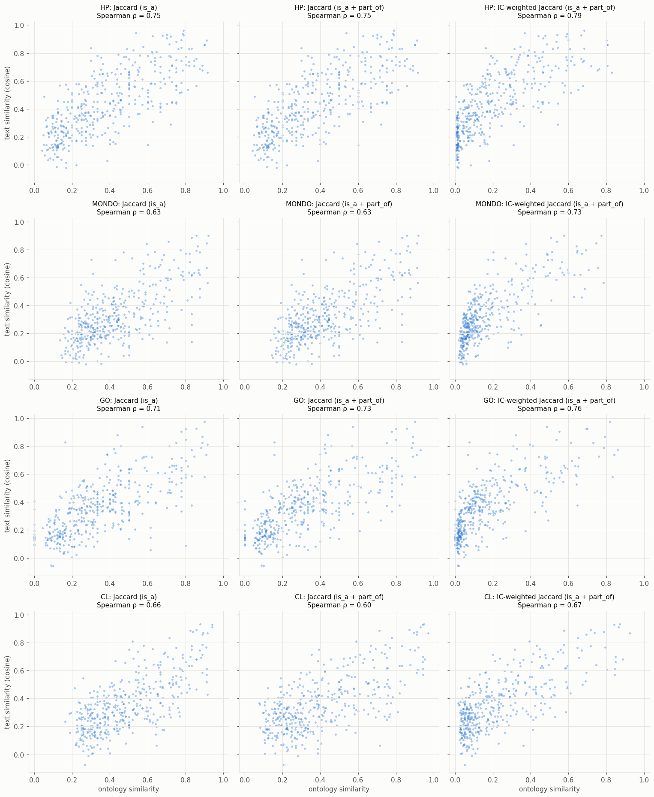
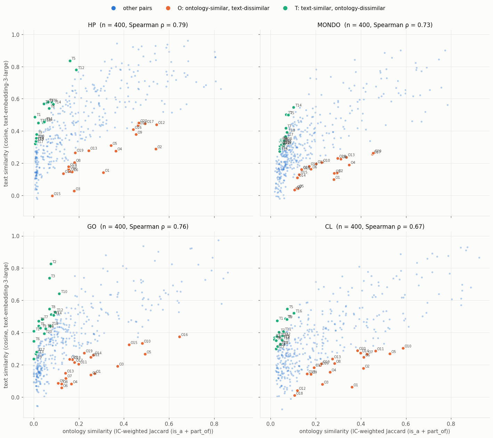

Where Ontology Similarity and Text-Embedding Similarity Disagree
For a sample of term pairs in each of several ontologies, we compare:
ontology similarity, computed from the terms’ ancestor closures in three ways:
Jaccard over
is_aancestors;Jaccard over
is_a+part_ofancestors;IC-weighted Jaccard over
is_a+part_ofancestors (simGIC), in which each shared ancestor counts in proportion to its information content, so sharing a generic ancestor counts for little;
text similarity: cosine similarity of the terms’ LLM embeddings, as served by OLS.
Most pairs fall along a common trend. The interesting cases are in the corners, where ontology and text disagree:
ontology-similar, text-dissimilar: terms that are close in the hierarchy but described in different words;
text-similar, ontology-dissimilar: terms that read alike but are classified far apart.
All three ontology measures are available through OAK’s EmbeddingProviderInterface: the closure and closure_ic models produce the vectors, with closure_embedding_predicates controlling which relations are followed, and the jaccard / weighted_jaccard metrics compare them.
[1]:
import warnings
warnings.filterwarnings("ignore", category=UserWarning, module="eutils")
warnings.filterwarnings("ignore", category=DeprecationWarning)
import matplotlib.pyplot as plt
import seaborn as sns
# reference palette (categorical slots in fixed order; sequential blue ramp)
BLUE, ORANGE, AQUA = "#2a78d6", "#eb6834", "#1baf7a"
INK, INK2, GRID, SURFACE = "#0b0b0b", "#52514e", "#e4e3df", "#fcfcfb"
plt.rcParams.update({
"figure.facecolor": SURFACE, "axes.facecolor": SURFACE, "savefig.facecolor": SURFACE,
"axes.edgecolor": GRID, "axes.labelcolor": INK2, "axes.titlecolor": INK,
"axes.grid": True, "grid.color": GRID, "grid.linewidth": 0.6,
"axes.spines.top": False, "axes.spines.right": False,
"xtick.color": INK2, "ytick.color": INK2, "text.color": INK,
"font.size": 10, "axes.titlesize": 11, "figure.dpi": 110,
})
SEQUENTIAL = sns.blend_palette(["#f0efec", "#86b6ef", "#2a78d6", "#0d366b"], as_cmap=True)
[2]:
import random
import numpy as np
import pandas as pd
from oaklib import get_adapter
from oaklib.datamodels.vocabulary import IS_A, OWL_CLASS, PART_OF
MODEL = "text-embedding-3-large_pca512"
# ontology -> (id prefix, root to sample within; None for the whole ontology)
ONTOLOGIES = {
"hp": ("HP", "HP:0000118"), # Phenotypic abnormality
"mondo": ("MONDO", None),
"go": ("GO", None),
"cl": ("CL", None),
}
N_RELATED, N_RANDOM, N_SHOW = 300, 100, 20
MEASURES = {
"jaccard_isa": "Jaccard (is_a)",
"jaccard_isa_partof": "Jaccard (is_a + part_of)",
"simgic": "IC-weighted Jaccard (is_a + part_of)",
}
PRIMARY = "simgic"
Sampling pairs
Purely random pairs are almost all unrelated, so they would pile up in one corner. To cover the whole range of ontology similarity, most pairs are sampled by picking a term, moving up to a random one of its is_a ancestors, then down to a random descendant of that ancestor. A smaller number of fully random pairs is added. Only terms from the ontology’s own namespace are used (no imported terms), obsolete terms are excluded, and for HP only terms under Phenotypic abnormality are used (no
clinical modifiers, inheritance modes, etc).
[3]:
def sample_pairs(adapter, prefix, root=None, seed=0):
rng = random.Random(seed)
if root:
candidates = adapter.descendants(root, predicates=[IS_A], reflexive=False)
else:
candidates = adapter.entities(filter_obsoletes=True, owl_type=OWL_CLASS)
terms = sorted(t for t in candidates if t.startswith(prefix + ":"))
term_set = set(terms)
pairs = set()
while len(pairs) < N_RELATED:
a = rng.choice(terms)
ancs = [x for x in adapter.ancestors(a, predicates=[IS_A], reflexive=False) if x in term_set]
if not ancs:
continue
x = rng.choice(ancs)
descs = [d for d in adapter.descendants(x, predicates=[IS_A], reflexive=False)
if d in term_set and d != a]
if descs:
pairs.add(tuple(sorted((a, rng.choice(descs)))))
while len(pairs) < N_RELATED + N_RANDOM:
a, b = rng.sample(terms, 2)
pairs.add(tuple(sorted((a, b))))
return sorted(pairs)
adapters, pair_sets = {}, {}
for name, (prefix, root) in ONTOLOGIES.items():
adapters[name] = (get_adapter(f"sqlite:obo:{name}"), get_adapter(f"ols:{name}"))
pair_sets[name] = sample_pairs(adapters[name][0], prefix, root)
print(name, len(pair_sets[name]), "pairs")
hp 400 pairs
mondo 400 pairs
go 400 pairs
cl 400 pairs
Scoring
For each ontology, closure vectors for all sampled terms are computed in one call so that they share dimensions. Information content (IC) is computed from the ontology structure (how many terms each ancestor subsumes), over the same is_a + part_of closure. In the IC-weighted vectors, the shared position with the largest value is the most informative common ancestor (MICA); it is listed in the tables to show where the ontology places the pair.
The same vectors are available directly from the adapter:
onto.closure_embedding_predicates = [IS_A, PART_OF]
ids, matrix = onto.entity_embeddings(terms, model="closure_ic")
onto.embedding_similarity_matrix(terms, model="closure_ic", metric="weighted_jaccard")
[4]:
from oaklib.utilities.embeddings.closure_embeddings import closure_embeddings
PREDICATES = [IS_A, PART_OF]
def jaccard(x, y):
x, y = x > 0, y > 0
return (x & y).sum() / (x | y).sum()
def weighted_jaccard(x, y):
return np.minimum(x, y).sum() / np.maximum(x, y).sum()
frames, micas = [], {}
for name, (onto, ols) in adapters.items():
pairs = pair_sets[name]
terms = sorted({t for p in pairs for t in p})
ids1, _, C1 = closure_embeddings(onto, terms, predicates=[IS_A])
ids2, vocab, C2 = closure_embeddings(onto, terms, predicates=PREDICATES)
ic = dict(onto.information_content_scores(vocab, object_closure_predicates=PREDICATES))
_, _, W = closure_embeddings(onto, ids2, predicates=PREDICATES, vocabulary=vocab, weights=ic)
ix1, ix2 = {t: i for i, t in enumerate(ids1)}, {t: i for i, t in enumerate(ids2)}
tids, T = ols.entity_embeddings(terms, model=MODEL)
T = T / np.linalg.norm(T, axis=1, keepdims=True)
tix = {t: i for i, t in enumerate(tids)}
rows = []
for a, b in pairs:
if a not in tix or b not in tix:
continue
wa, wb = W[ix2[a]], W[ix2[b]]
shared = np.minimum(wa, wb)
micas[(a, b)] = vocab[int(shared.argmax())] if shared.max() > 0 else None
rows.append({
"ontology": name, "a": a, "b": b,
"jaccard_isa": jaccard(C1[ix1[a]], C1[ix1[b]]),
"jaccard_isa_partof": jaccard(C2[ix2[a]], C2[ix2[b]]),
"simgic": weighted_jaccard(wa, wb),
"text_sim": float(T[tix[a]] @ T[tix[b]]),
})
df = pd.DataFrame(rows)
# disagreement: difference of within-ontology percentile ranks, per measure
for m in MEASURES:
df[f"disagreement_{m}"] = df[m].rank(pct=True) - df.text_sim.rank(pct=True)
frames.append(df)
print(f"{name}: {len(df)} pairs scored ({len(pairs) - len(df)} missing a text embedding)")
scores = pd.concat(frames, ignore_index=True)
hp: 400 pairs scored (0 missing a text embedding)
mondo: 400 pairs scored (0 missing a text embedding)
go: 400 pairs scored (0 missing a text embedding)
cl: 400 pairs scored (0 missing a text embedding)
How well does each ontology measure agree with text?
Spearman correlation between each ontology measure and text similarity:
[5]:
from scipy.stats import spearmanr
agreement = pd.DataFrame({
label: scores.groupby("ontology", sort=False).apply(lambda d, m=m: spearmanr(d[m], d.text_sim).statistic)
for m, label in MEASURES.items()
})
agreement.index = agreement.index.str.upper()
agreement.round(3)
[5]:
| Jaccard (is_a) | Jaccard (is_a + part_of) | IC-weighted Jaccard (is_a + part_of) | |
|---|---|---|---|
| ontology | |||
| HP | 0.748 | 0.748 | 0.789 |
| MONDO | 0.628 | 0.628 | 0.732 |
| GO | 0.706 | 0.725 | 0.760 |
| CL | 0.662 | 0.598 | 0.672 |
[6]:
fig, axes = plt.subplots(len(ONTOLOGIES), len(MEASURES), figsize=(14, 17), sharey=True)
for row, (name, df) in zip(axes, scores.groupby("ontology", sort=False)):
for ax, (m, label) in zip(row, MEASURES.items()):
ax.scatter(df[m], df.text_sim, s=10, color=BLUE, alpha=0.4, linewidths=0)
rho = spearmanr(df[m], df.text_sim).statistic
ax.set_title(f"{name.upper()}: {label}\nSpearman ρ = {rho:.2f}", fontsize=10)
ax.set_xlim(-0.03, 1.03)
for ax in axes[:, 0]:
ax.set_ylabel("text similarity (cosine)")
for ax in axes[-1]:
ax.set_xlabel("ontology similarity")
fig.tight_layout()

The corners (IC-weighted Jaccard vs text)
The disagreement score is the difference between a pair’s percentile rank under ontology similarity and its percentile rank under text similarity. The 20 most extreme pairs in each direction are highlighted and numbered; the tables below list them.
[7]:
ONTO_ONLY, TEXT_ONLY = ORANGE, AQUA
d_col = f"disagreement_{PRIMARY}"
corners = {}
fig, axes = plt.subplots(2, 2, figsize=(13, 11.5), sharex=True, sharey=True)
for ax, (name, df) in zip(axes.flat, scores.groupby("ontology", sort=False)):
onto_only = df.nlargest(N_SHOW, d_col)
text_only = df.nsmallest(N_SHOW, d_col)
corners[name] = (onto_only, text_only)
rest = df.drop(onto_only.index.union(text_only.index))
ax.scatter(rest[PRIMARY], rest.text_sim, s=12, color=BLUE, alpha=0.35, linewidths=0)
for sub, color, tag in ((onto_only, ONTO_ONLY, "O"), (text_only, TEXT_ONLY, "T")):
ax.scatter(sub[PRIMARY], sub.text_sim, s=40, color=color, edgecolors=SURFACE, linewidths=1.2, zorder=3)
for k, (_, r) in enumerate(sub.iterrows(), 1):
ax.annotate(f"{tag}{k}", (r[PRIMARY], r.text_sim), xytext=(3, 2),
textcoords="offset points", fontsize=6.5, color=INK2)
rho = spearmanr(df[PRIMARY], df.text_sim).statistic
ax.set_title(f"{name.upper()} (n = {len(df)}, Spearman ρ = {rho:.2f})")
for ax in axes[-1]:
ax.set_xlabel(f"ontology similarity ({MEASURES[PRIMARY]})")
for ax in axes[:, 0]:
ax.set_ylabel(f"text similarity (cosine, {MODEL.replace('_pca512', '')})")
handles = [plt.Line2D([], [], marker="o", linestyle="", color=c, markersize=7) for c in (BLUE, ONTO_ONLY, TEXT_ONLY)]
fig.legend(handles, ["other pairs", "O: ontology-similar, text-dissimilar", "T: text-similar, ontology-dissimilar"],
loc="upper center", ncol=3, frameon=False, bbox_to_anchor=(0.5, 1.0))
fig.tight_layout(rect=(0, 0, 1, 0.965))

How stable are the corners across ontology measures? For each ontology, the number of the top-20 pairs in each corner that are also in the top 20 under the other measures:
[8]:
rows = []
for name, df in scores.groupby("ontology", sort=False):
for corner, pick in (("ontology-similar, text-dissimilar", "nlargest"), ("text-similar, ontology-dissimilar", "nsmallest")):
top = {m: set(getattr(df, pick)(N_SHOW, f"disagreement_{m}").index) for m in MEASURES}
rows.append({"ontology": name.upper(), "corner": corner,
**{f"shared with {MEASURES[m]}": len(top[PRIMARY] & top[m]) for m in MEASURES if m != PRIMARY}})
pd.DataFrame(rows).set_index(["ontology", "corner"])
[8]:
| shared with Jaccard (is_a) | shared with Jaccard (is_a + part_of) | ||
|---|---|---|---|
| ontology | corner | ||
| HP | ontology-similar, text-dissimilar | 15 | 15 |
| text-similar, ontology-dissimilar | 11 | 11 | |
| MONDO | ontology-similar, text-dissimilar | 17 | 17 |
| text-similar, ontology-dissimilar | 11 | 11 | |
| GO | ontology-similar, text-dissimilar | 14 | 16 |
| text-similar, ontology-dissimilar | 11 | 14 | |
| CL | ontology-similar, text-dissimilar | 13 | 15 |
| text-similar, ontology-dissimilar | 7 | 14 |
The corner pairs
For each ontology, the two tables list the 20 most extreme disagreements under the IC-weighted measure, with all three ontology scores. “MICA” is the most informative common ancestor over is_a + part_of.
[9]:
from IPython.display import Markdown, display
pd.set_option("display.max_colwidth", 55)
pd.set_option("display.max_rows", 50)
def corner_table(onto, sub, tag):
ids = set(sub.a) | set(sub.b) | {micas[(r.a, r.b)] for r in sub.itertuples()} - {None}
labels = dict(onto.labels(ids))
out = []
for k, r in enumerate(sub.itertuples(), 1):
mica = micas[(r.a, r.b)]
out.append({
"#": f"{tag}{k}",
"term 1": f"{labels.get(r.a)} ({r.a})",
"term 2": f"{labels.get(r.b)} ({r.b})",
"text": round(r.text_sim, 2),
"IC-Jaccard": round(r.simgic, 2),
"Jaccard is_a+part_of": round(r.jaccard_isa_partof, 2),
"Jaccard is_a": round(r.jaccard_isa, 2),
"MICA": labels.get(mica, mica) if mica else "(none)",
})
return pd.DataFrame(out).set_index("#")
for name, (onto_only, text_only) in corners.items():
onto = adapters[name][0]
display(Markdown(f"### {name.upper()}: ontology-similar, text-dissimilar"))
display(corner_table(onto, onto_only, "O"))
display(Markdown(f"### {name.upper()}: text-similar, ontology-dissimilar"))
display(corner_table(onto, text_only, "T"))
HP: ontology-similar, text-dissimilar
| term 1 | term 2 | text | IC-Jaccard | Jaccard is_a+part_of | Jaccard is_a | MICA | |
|---|---|---|---|---|---|---|---|
| # | |||||||
| O1 | Slough (HP:0020013) | Trichilemmal cyst (HP:0025246) | 0.14 | 0.31 | 0.60 | 0.60 | Localized skin lesion |
| O2 | Light-chain paraproteinemia (HP:0031048) | Increased anti-dust mite IgE antibody level (HP:041... | 0.29 | 0.54 | 0.72 | 0.72 | Abnormal circulating immunoglobulin concentration |
| O3 | Fragmented elastic fibers in the dermis (HP:0025167) | V-sign (HP:0025536) | 0.03 | 0.18 | 0.38 | 0.38 | Abnormal skin morphology |
| O4 | Abnormality of abdominal situs (HP:0011620) | Isomerism (HP:0031853) | 0.28 | 0.36 | 0.50 | 0.50 | Heterotaxy |
| O5 | Abnormal saccadic eye movements (HP:0000570) | Compensatory chin elevation (HP:0001477) | 0.31 | 0.34 | 0.62 | 0.62 | Abnormality of eye movement |
| O6 | Abnormality of vitamin metabolism (HP:0100508) | Shortened O-fucosylated glycan on properdin (HP:041... | 0.15 | 0.17 | 0.40 | 0.40 | Abnormal metabolism |
| O7 | Hip pain (HP:0030838) | Fish odor (HP:0410020) | 0.15 | 0.16 | 0.43 | 0.43 | Constitutional symptom |
| O8 | Recurrent skin infections (HP:0001581) | Autoimmune encephalitis (HP:5210423) | 0.20 | 0.18 | 0.33 | 0.33 | Increased inflammatory response |
| O9 | Partial development of the penile shaft (HP:0008708) | Varicocele (HP:0012871) | 0.38 | 0.45 | 0.67 | 0.67 | Abnormal male external genitalia morphology |
| O10 | CNS hypermyelination (HP:0012754) | Empty delta sign (HP:0032267) | 0.16 | 0.15 | 0.42 | 0.42 | Morphological central nervous system abnormality |
| O11 | Granuloma (HP:0032252) | Decreased HLA-DR+ T cell proportion (HP:5200034) | 0.14 | 0.13 | 0.31 | 0.31 | Abnormal immune system morphology |
| O12 | Geophagia (HP:0025062) | Bulimia (HP:0100739) | 0.44 | 0.54 | 0.75 | 0.75 | Abnormal eating behavior |
| O13 | Metaphyseal sclerosis (HP:0004979) | Deviation of the 4th toe (HP:0010338) | 0.28 | 0.24 | 0.47 | 0.47 | Abnormal limb bone morphology |
| O14 | Anti-transcription intermediary factor-1gamma antib... | Unusual norovirus infection (HP:5210310) | 0.18 | 0.15 | 0.40 | 0.40 | Abnormality of immune system physiology |
| O15 | Anti-SEZ6L2 antibody (HP:5000032) | Unusual fungal arthritis (HP:5210209) | -0.00 | 0.08 | 0.22 | 0.22 | Abnormality of immune system physiology |
| O16 | Abnormality of superior crus of antihelix (HP:0011245) | Long ear (HP:0400004) | 0.41 | 0.44 | 0.67 | 0.67 | Abnormal pinna morphology |
| O17 | Reduced eye contact (HP:0000817) | Use of another person's body to communicate (HP:400... | 0.45 | 0.49 | 0.73 | 0.73 | Abnormal nonverbal communicative behavior |
| O18 | Jaw claudication (HP:0030164) | Absent superficial temporal artery pulse (HP:6000786) | 0.44 | 0.46 | 0.70 | 0.70 | Abnormal arterial physiology |
| O19 | Peg-shaped maxillary lateral incisors (HP:0006342) | Tongue hyperpigmentation (HP:6001529) | 0.27 | 0.18 | 0.39 | 0.39 | Abnormal oral morphology |
| O20 | Nephropathy (HP:0000112) | Steroid-dependent nephrotic syndrome (HP:0025650) | 0.45 | 0.47 | 0.73 | 0.73 | Abnormal renal physiology |
HP: text-similar, ontology-dissimilar
| term 1 | term 2 | text | IC-Jaccard | Jaccard is_a+part_of | Jaccard is_a | MICA | |
|---|---|---|---|---|---|---|---|
| # | |||||||
| T1 | Osteoma cutis (HP:0025027) | Patchy sclerosis of the proximal phalanx of the 3rd... | 0.49 | 0.01 | 0.05 | 0.05 | Phenotypic abnormality |
| T2 | Synostosis involving the 5th metacarpal (HP:0009708) | Proximal radioulnar joint dislocation (HP:6000890) | 0.57 | 0.04 | 0.13 | 0.13 | Abnormality of the upper limb |
| T3 | Bone-in-a-bone appearance of forearm (HP:0003955) | Bullet-shaped middle phalanx of the 3rd finger (HP:... | 0.58 | 0.06 | 0.17 | 0.17 | Abnormality of the upper limb |
| T4 | Psychotic episodes (HP:0000725) | Focal aware emotional seizure with laughing (HP:003... | 0.58 | 0.06 | 0.22 | 0.22 | Abnormal nervous system physiology |
| T5 | Periorbital fullness (HP:0000629) | Lower eyelid edema (HP:0012568) | 0.84 | 0.16 | 0.30 | 0.30 | Abnormality of the periorbital region |
| T6 | Hypoplasia of the ovary (HP:0008724) | Increased antral follicle count (HP:0033086) | 0.58 | 0.08 | 0.24 | 0.24 | Abnormality of the genital system |
| T7 | Abnormality of liposaccharide metabolism (HP:0010968) | Abnormality of abdominal situs (HP:0011620) | 0.45 | 0.02 | 0.20 | 0.20 | Phenotypic abnormality |
| T8 | Abnormality of the joint spaces of the elbow (HP:00... | Irregular epiphysis of the proximal phalanx of the ... | 0.54 | 0.07 | 0.18 | 0.18 | Abnormality of the upper limb |
| T9 | Fatigable weakness of bulbar muscles (HP:0030192) | Cervical motion tenderness (HP:6000107) | 0.38 | 0.01 | 0.12 | 0.12 | Phenotypic abnormality |
| T10 | Chordee (HP:0000041) | Vesicoallantoic abdominal wall defect (HP:0030733) | 0.45 | 0.04 | 0.18 | 0.18 | Abnormality of the genitourinary system |
| T11 | Increased circulating lactate concentration (HP:000... | Elevated urinary 5-amino-4-imidazolecarboxamide-rib... | 0.46 | 0.05 | 0.20 | 0.20 | Abnormality of metabolism/homeostasis |
| T12 | Absent middle phalanx of 4th finger (HP:0009294) | Patchy sclerosis of the middle phalanx of the 4th f... | 0.78 | 0.19 | 0.33 | 0.33 | Abnormality of the middle phalanx of the 4th finger |
| T13 | Medially fused radial epiphyseal plates (HP:0004013) | Abnormal renal corticomedullary differentiation (HP... | 0.34 | 0.01 | 0.07 | 0.07 | Phenotypic abnormality |
| T14 | Fibrous tissue neoplasm (HP:0012316) | Neoplasm of the parathyroid gland (HP:0100733) | 0.57 | 0.09 | 0.27 | 0.27 | Neoplasm |
| T15 | Chiari type I malformation (HP:0007099) | Abdominal aortic dissection (HP:0033311) | 0.35 | 0.01 | 0.10 | 0.10 | Phenotypic abnormality |
| T16 | Adrenal pheochromocytoma (HP:0006748) | Uterine adenofibroma (HP:0034709) | 0.46 | 0.05 | 0.12 | 0.12 | Neoplasm by anatomical site |
| T17 | Unilateral radial aplasia (HP:0011908) | Primary vesicoureteral reflux (HP:0033738) | 0.32 | 0.01 | 0.06 | 0.06 | Phenotypic abnormality |
| T18 | Attached earlobe (HP:0009907) | Splayed superior cerebellar peduncle (HP:0030285) | 0.34 | 0.01 | 0.10 | 0.10 | Phenotypic abnormality |
| T19 | Abnormal presence of ultra-large von Willebrand fac... | Abnormality of mentalis muscle (HP:3000007) | 0.34 | 0.01 | 0.10 | 0.10 | Phenotypic abnormality |
| T20 | Nephroptosis (HP:0011126) | Knee extension contracture (HP:0034672) | 0.36 | 0.01 | 0.10 | 0.10 | Phenotypic abnormality |
MONDO: ontology-similar, text-dissimilar
| term 1 | term 2 | text | IC-Jaccard | Jaccard is_a+part_of | Jaccard is_a | MICA | |
|---|---|---|---|---|---|---|---|
| # | |||||||
| O1 | dilated cardiomyopathy 2A (MONDO:0012746) | 46,XY sex reversal 6 (MONDO:0013410) | 0.10 | 0.28 | 0.50 | 0.50 | familial cardiomyopathy |
| O2 | monosodium glutamate sensitivity (MONDO:0009280) | Lamb-Shaffer syndrome (MONDO:0014778) | 0.14 | 0.29 | 0.83 | 0.83 | hereditary disease |
| O3 | autism, susceptibility to, 20 (MONDO:0030004) | gallbladder disease 4 (MONDO:1010151) | 0.14 | 0.28 | 0.70 | 0.70 | inherited disease susceptibility |
| O4 | trigonocephaly (MONDO:0000156) | osteogenesis imperfecta, type 20 (MONDO:0032846) | 0.19 | 0.35 | 0.61 | 0.61 | bone development disease |
| O5 | fat necrosis of breast (MONDO:0001101) | intellectual disability, anterior maxillary protrus... | 0.04 | 0.12 | 0.50 | 0.50 | human disease |
| O6 | maleylacetoacetate isomerase deficiency (MONDO:0060... | immunodeficiency 109 with lymphoproliferation (MOND... | 0.16 | 0.18 | 0.62 | 0.62 | hereditary disease |
| O7 | fire ant poisoning (MONDO:0100341) | OFD1-related ciliopathy (MONDO:1040039) | 0.04 | 0.11 | 0.47 | 0.47 | disease by etiologic mechanism |
| O8 | fumaric aciduria (MONDO:0011730) | Leber-like hereditary optic neuropathy, autosomal r... | 0.23 | 0.31 | 0.54 | 0.54 | inborn mitochondrial metabolism disorder |
| O9 | neonatal abstinence syndrome (MONDO:0005566) | ectodermal dysplasia 13, hair/tooth type (MONDO:004... | 0.03 | 0.11 | 0.39 | 0.39 | syndromic disease |
| O10 | portosystemic shunt, non-human animal (MONDO:1011409) | XX difference of sexual development, dog (MONDO:101... | 0.20 | 0.23 | 0.56 | 0.56 | disorder of development or morphogenesis, non-human... |
| O11 | patent ductus venosus (MONDO:0011089) | hypertrophic cardiomyopathy 16 (MONDO:0013455) | 0.16 | 0.14 | 0.44 | 0.44 | cardiovascular disorder |
| O12 | Huntington disease, non-human animal (MONDO:1010231) | acute equine grass sickness (MONDO:1016381) | 0.20 | 0.20 | 0.50 | 0.50 | central nervous system disorder, non-human animal |
| O13 | infectious ectromelia (MONDO:0005809) | ascarid impaction, non-human animal (MONDO:1014847) | 0.24 | 0.34 | 0.71 | 0.71 | infectious disease, non-human animal |
| O14 | otosclerosis 8 (MONDO:0012797) | Giacheti syndrome (MONDO:0013037) | 0.11 | 0.12 | 0.50 | 0.50 | hereditary disease |
| O15 | oculocutaneous albinism, OCA2-related, Mexican tetr... | intestinal malabsorption, non-human animal (MONDO:1... | 0.13 | 0.13 | 0.47 | 0.47 | disease by body system or component, non-human animal |
| O16 | immunoglobulin M deficiency, horse (MONDO:1012135) | spermatic cord varicoele, non-human animal (MONDO:1... | 0.16 | 0.14 | 0.57 | 0.57 | disease by body system or component, non-human animal |
| O17 | moyamoya angiopathy-short stature-facial dysmorphis... | aneurysm, intracranial berry, 9 (MONDO:0012949) | 0.26 | 0.45 | 0.66 | 0.66 | cerebral arterial disease |
| O18 | spinocerebellar degeneration with slow eye movement... | Alzheimer disease 5 (MONDO:0011194) | 0.23 | 0.30 | 0.53 | 0.53 | hereditary dementia |
| O19 | gastrointestinal tuberculosis (MONDO:0005768) | nail infection (MONDO:0024487) | 0.18 | 0.17 | 0.50 | 0.50 | infectious disease |
| O20 | onychodystrophy, non-human animal (MONDO:1017354) | Appaloosa horse parentage syndrome (MONDO:1017535) | 0.26 | 0.45 | 0.83 | 0.83 | skin disorder, non-human animal |
MONDO: text-similar, ontology-dissimilar
| term 1 | term 2 | text | IC-Jaccard | Jaccard is_a+part_of | Jaccard is_a | MICA | |
|---|---|---|---|---|---|---|---|
| # | |||||||
| T1 | endobronchial lipoma (MONDO:0000961) | lipid-rich breast carcinoma (MONDO:0021090) | 0.50 | 0.07 | 0.27 | 0.27 | neoplasm |
| T2 | autosomal dominant nocturnal frontal lobe epilepsy ... | subependymal giant cell astrocytoma (MONDO:0016693) | 0.34 | 0.04 | 0.23 | 0.23 | nervous system disorder |
| T3 | pyloric stenosis, infantile hypertrophic, 1 (MONDO:... | pseudotumor cerebri (MONDO:0009468) | 0.35 | 0.05 | 0.28 | 0.28 | disease by body system or component |
| T4 | late congenital syphilis (MONDO:0005821) | short stature, intellectual disability, callosal ag... | 0.34 | 0.05 | 0.28 | 0.28 | disease by etiologic mechanism |
| T5 | parapharyngeal meningioma (MONDO:0004502) | benign neoplasm of epiglottis (MONDO:0021446) | 0.50 | 0.08 | 0.32 | 0.32 | neoplasm |
| T6 | silent sinus syndrome (MONDO:0019108) | PNPLA6-related spastic paraplegia with or without a... | 0.31 | 0.04 | 0.24 | 0.24 | disease by body system or component |
| T7 | ampulla of vater mucinous adenocarcinoma (MONDO:000... | diffuse cavernous hemangioma of the rectum (MONDO:0... | 0.42 | 0.07 | 0.19 | 0.19 | intestinal neoplasm |
| T8 | sphenoidal sinus cancer (MONDO:0001994) | acquired laryngomalacia (MONDO:0850295) | 0.31 | 0.04 | 0.18 | 0.18 | respiratory system disorder |
| T9 | episodic ataxia type 2 (MONDO:0007163) | combined deficiency of factor V and factor VIII (MO... | 0.33 | 0.05 | 0.30 | 0.30 | disease by body system or component |
| T10 | retinal hemangioblastoma (MONDO:0003343) | breast papillary carcinoma (MONDO:0003532) | 0.32 | 0.05 | 0.20 | 0.20 | neoplasm |
| T11 | osteoporosis-pseudoglioma syndrome (MONDO:0009820) | limb-girdle muscular dystrophy (MONDO:0016971) | 0.32 | 0.05 | 0.19 | 0.19 | musculoskeletal system disorder |
| T12 | gastric linitis plastica (MONDO:0018184) | supratip dysplasia (MONDO:0018757) | 0.29 | 0.04 | 0.25 | 0.25 | disease by body system or component |
| T13 | epulis (MONDO:0003396) | benign peripheral nerve granular cell tumor (MONDO:... | 0.33 | 0.06 | 0.27 | 0.27 | cancer or benign tumor |
| T14 | malignant thyroid stimulating hormone producing neo... | functional pancreatic neuroendocrine tumor (MONDO:0... | 0.55 | 0.10 | 0.25 | 0.25 | functioning endocrine neoplasm |
| T15 | benign mammary dysplasia (MONDO:0004808) | trichoepithelioma, multiple familial, 2 (MONDO:0012... | 0.34 | 0.06 | 0.31 | 0.31 | disease by body system or component |
| T16 | nephrolithiasis, X-linked recessive, with renal fai... | tapetal degeneration, dog (MONDO:1012263) | 0.27 | 0.04 | 0.26 | 0.26 | disease |
| T17 | tympanosclerosis (MONDO:0001443) | laryngeal papillomatosis (MONDO:0023597) | 0.37 | 0.07 | 0.26 | 0.26 | otorhinolaryngologic disease |
| T18 | pontocerebellar hypoplasia type 2C (MONDO:0012891) | noonan syndrome 12 (MONDO:0032839) | 0.39 | 0.07 | 0.25 | 0.25 | developmental defect during embryogenesis |
| T19 | neurofibroma of the esophagus (MONDO:0004837) | porokeratotic eccrine ostial and dermal duct nevus ... | 0.31 | 0.06 | 0.24 | 0.24 | neoplasm |
| T20 | autoimmune thrombocytopenic purpura, dog (MONDO:101... | myositis ossificans, pig (MONDO:1010920) | 0.32 | 0.06 | 0.32 | 0.32 | disease by body system or component, non-human animal |
GO: ontology-similar, text-dissimilar
| term 1 | term 2 | text | IC-Jaccard | Jaccard is_a+part_of | Jaccard is_a | MICA | |
|---|---|---|---|---|---|---|---|
| # | |||||||
| O1 | ground meristem histogenesis (GO:0010066) | style development (GO:0048479) | 0.15 | 0.27 | 0.45 | 0.62 | reproductive structure development |
| O2 | catecholamine uptake (GO:0090493) | migracytosis (GO:0140495) | 0.14 | 0.25 | 0.50 | 0.50 | transport |
| O3 | RecFOR complex (GO:0043850) | Hpa2 acetyltransferase complex (GO:1990331) | 0.19 | 0.37 | 0.61 | 0.38 | chromosome |
| O4 | phosphatidylinositol 3-kinase complex, class III (G... | pellicular membrane (GO:0120267) | 0.08 | 0.17 | 0.38 | 0.21 | membrane |
| O5 | telomerase holoenzyme complex (GO:0005697) | repressor ecdysone receptor complex (GO:0008231) | 0.27 | 0.49 | 0.72 | 0.50 | nuclear protein-containing complex |
| O6 | meiotic spindle pole (GO:0090619) | vascular endothelial glycocalyx (GO:0120239) | 0.06 | 0.12 | 0.33 | 0.62 | cellular anatomical structure |
| O7 | viral integration complex (GO:0019035) | endospore cortex (GO:0043595) | 0.12 | 0.14 | 0.40 | 0.33 | cellular anatomical structure |
| O8 | protein-phosphoribosyl dephospho-coenzyme A linkage... | fractalkine production (GO:0032603) | 0.08 | 0.12 | 0.32 | 0.32 | macromolecule metabolic process |
| O9 | perikaryon (GO:0043204) | extrahaustorial matrix (GO:0085036) | 0.09 | 0.11 | 0.29 | 0.80 | cellular anatomical structure |
| O10 | L-galactose dehydrogenase activity (GO:0010349) | prostaglandin F synthase activity (GO:0047017) | 0.33 | 0.48 | 0.78 | 0.78 | oxidoreductase activity, acting on the CH-OH group ... |
| O11 | LRR domain binding (GO:0030275) | V2 vasopressin receptor binding (GO:0031896) | 0.20 | 0.20 | 0.45 | 0.45 | protein binding |
| O12 | positive regulation of interferon-beta production (... | RNA destabilization (GO:0050779) | 0.25 | 0.25 | 0.42 | 0.42 | positive regulation of macromolecule metabolic process |
| O13 | lymphatic endothelial cell differentiation (GO:0060... | superior temporal gyrus development (GO:0071109) | 0.15 | 0.14 | 0.29 | 0.31 | system development |
| O14 | selenocysteine incorporation (GO:0001514) | regulation of translation at postsynapse, modulatin... | 0.26 | 0.26 | 0.41 | 0.47 | regulation of translation |
| O15 | potassium:proton exchanging ATPase complex (GO:0005... | HFE-transferrin receptor complex (GO:1990712) | 0.33 | 0.42 | 0.65 | 0.50 | plasma membrane protein complex |
| O16 | late endosome (GO:0005770) | fusiform vesicle (GO:0120002) | 0.37 | 0.65 | 0.82 | 0.83 | cytoplasmic vesicle |
| O17 | secondary cell wall (GO:0009531) | basal ring of apical complex (GO:0020032) | 0.22 | 0.18 | 0.47 | 0.62 | cellular anatomical structure |
| O18 | L-galactose dehydrogenase activity (GO:0010349) | taxane 13-alpha-hydroxylase activity (GO:0050598) | 0.23 | 0.17 | 0.42 | 0.42 | oxidoreductase activity |
| O19 | growth factor receptor binding (GO:0070851) | K6-linked polyubiquitin modification-dependent prot... | 0.27 | 0.22 | 0.50 | 0.50 | protein binding |
| O20 | sucrase-isomaltase complex (GO:0070014) | 7SK snRNP (GO:0120259) | 0.23 | 0.16 | 0.33 | 0.38 | protein-containing complex |
GO: text-similar, ontology-dissimilar
| term 1 | term 2 | text | IC-Jaccard | Jaccard is_a+part_of | Jaccard is_a | MICA | |
|---|---|---|---|---|---|---|---|
| # | |||||||
| T1 | integrin alpha9-beta1 complex (GO:0034679) | negative regulation of fibronectin-dependent thymoc... | 0.41 | 0.00 | 0.00 | 0.00 | (none) |
| T2 | negative regulation of dendritic spine development ... | positive regulation of dendritic spine morphogenesi... | 0.83 | 0.07 | 0.16 | 0.16 | regulation of dendritic spine development |
| T3 | establishment or maintenance of cytoskeleton polari... | maintenance of neuroblast polarity (GO:0045201) | 0.74 | 0.07 | 0.16 | 0.38 | establishment or maintenance of cell polarity |
| T4 | UDP-N-acetylglucosamine transmembrane transporter a... | 2,3,4,5-tetrahydropyridine-2,6-dicarboxylate N-succ... | 0.47 | 0.02 | 0.10 | 0.17 | molecular_function |
| T5 | protein localization to linear element (GO:0036181) | positive regulation of protein localization to pres... | 0.44 | 0.02 | 0.14 | 0.14 | biological_process |
| T6 | azurophil granule membrane (GO:0035577) | negative regulation of lysosomal membrane permeabil... | 0.35 | 0.00 | 0.00 | 0.00 | (none) |
| T7 | protein-N(PI)-phosphohistidine-trehalose phosphotra... | galactosamine-6-phosphate isomerase activity (GO:00... | 0.48 | 0.04 | 0.13 | 0.20 | catalytic activity |
| T8 | inhibitory killer cell immunoglobulin-like receptor... | positive regulation of complement-dependent cytotox... | 0.55 | 0.07 | 0.22 | 0.26 | regulation of cellular process |
| T9 | isocitrate-homoisocitrate dehydrogenase activity (G... | negative regulation of catalytic activity (GO:0043086) | 0.43 | 0.03 | 0.14 | 0.14 | process |
| T10 | alcohol O-cinnamoyltransferase activity (GO:0047182) | allyl-alcohol dehydrogenase activity (GO:0047655) | 0.64 | 0.11 | 0.33 | 0.33 | catalytic activity |
| T11 | long-chain fatty acid-CoA ligase activity (GO:0004467) | methionine-tRNA ligase activity (GO:0004825) | 0.51 | 0.08 | 0.17 | 0.28 | ligase activity |
| T12 | 5-methyltetrahydropteroyltriglutamate-homocysteine ... | maleylacetate reductase activity (GO:0018506) | 0.53 | 0.09 | 0.31 | 0.31 | catalytic activity |
| T13 | death-inducing signaling complex assembly (GO:0071550) | single-stranded 3'-5' DNA helicase activity (GO:199... | 0.27 | 0.01 | 0.05 | 0.08 | process |
| T14 | regulation of respiratory burst involved in inflamm... | regulation of protein processing in phagocytic vesi... | 0.51 | 0.09 | 0.23 | 0.23 | regulation of metabolic process |
| T15 | negative regulation of non-canonical inflammasome c... | negative regulation of phosphatidylserine biosynthe... | 0.43 | 0.05 | 0.15 | 0.26 | negative regulation of cellular process |
| T16 | symbiont-mediated disruption of host mitochondrion ... | spore dispersal (GO:0075325) | 0.42 | 0.05 | 0.30 | 0.30 | biological_process |
| T17 | positive regulation of metula development (GO:0070804) | Mo(VI)-molybdopterin cytosine dinucleotide biosynth... | 0.28 | 0.01 | 0.07 | 0.07 | biological_process |
| T18 | positive regulation of DNA endoreduplication (GO:00... | positive regulation of lamellipodium morphogenesis ... | 0.44 | 0.07 | 0.21 | 0.21 | positive regulation of cellular process |
| T19 | integrin alpha9-beta1 complex (GO:0034679) | anterograde trans-synaptic signaling (GO:0098916) | 0.24 | 0.00 | 0.00 | 0.00 | (none) |
| T20 | positive regulation of protein homooligomerization ... | negative regulation of eating behavior (GO:1903999) | 0.39 | 0.05 | 0.19 | 0.19 | regulation of biological process |
CL: ontology-similar, text-dissimilar
| term 1 | term 2 | text | IC-Jaccard | Jaccard is_a+part_of | Jaccard is_a | MICA | |
|---|---|---|---|---|---|---|---|
| # | |||||||
| O1 | olfactory ensheathing cell (CL:0011028) | Astro-NT NN_1 Slc36a2 astrocyte (Mmus) (CL:4307029) | 0.06 | 0.36 | 0.71 | 0.65 | glial cell |
| O2 | melanophage (CL:0002060) | CD8-alpha-positive plasmacytoid dendritic cell (CL:... | 0.18 | 0.41 | 0.54 | 0.68 | mononuclear phagocyte |
| O3 | cone retinal bipolar cell (CL:0000752) | hypothalamic gonadotropin-releasing hormone neuron ... | 0.08 | 0.23 | 0.40 | 0.48 | glutamatergic neuron |
| O4 | superior cervical ganglion VIP neuron (CL:4033106) | STRd D2 StrioMat Hybrid MSN indirect pathway medium... | 0.15 | 0.26 | 0.59 | 0.52 | neuron |
| O5 | pvalb chandelier GABAergic interneuron (CL:4023036) | GPe-NDB-SI LHX6-LHX8-GBX1 GABA GABAergic interneuro... | 0.27 | 0.53 | 0.76 | 0.67 | GABAergic interneuron |
| O6 | M13 retinal ganglion cell (CL:0003046) | untufted pyramidal neuron (CL:4023095) | 0.25 | 0.41 | 0.75 | 0.65 | central nervous system neuron |
| O7 | H2 horizontal cell (CL:0004218) | spinal cord medial motor column neuron (CL:2000024) | 0.27 | 0.43 | 0.69 | 0.72 | central nervous system neuron |
| O8 | sacral ganglion TH neuron (CL:4033126) | AMY-SLEA-BNST GABA GABAergic interneuron (Primate) ... | 0.21 | 0.28 | 0.55 | 0.50 | neuron |
| O9 | totipotent stem cell (CL:0000052) | airway submucosal gland duct basal cell (CL:4033024) | 0.14 | 0.18 | 0.29 | 0.64 | somatic stem cell |
| O10 | Oriens-Lacunosum Moleculare neuron (CL:0020074) | pvalb chandelier GABAergic interneuron (Homo sapien... | 0.30 | 0.59 | 0.81 | 0.77 | cerebral cortex GABAergic interneuron |
| O11 | thalamic excitatory neuron (CL:4023068) | BF SKOR1 Glut glutamatergic neuron of the basal gan... | 0.29 | 0.46 | 0.77 | 0.71 | glutamatergic neuron |
| O12 | ciliated cell (CL:0000064) | lumbar ganglion TH/NPY neuron (CL:4033123) | 0.04 | 0.12 | 0.32 | 0.39 | eukaryotic cell |
| O13 | mesangial phagocyte (CL:0000777) | type II NK T cell (CL:0000922) | 0.24 | 0.27 | 0.46 | 0.45 | mononuclear leukocyte |
| O14 | M6 retinal ganglion cell (CL:0003035) | cervicothoracic ganglion enkephalin neuron (CL:4033... | 0.27 | 0.40 | 0.74 | 0.68 | neuron |
| O15 | anterior lateral line ganglion neuron (CL:0008021) | Astro-TE NN_1 Lncpint astrocyte (Mmus) (CL:4307040) | 0.14 | 0.16 | 0.48 | 0.39 | neural cell |
| O16 | forebrain radial glial cell (CL:0013000) | OEC NN_1 Rasgef1c olfactory ensheathing cell (Mmus)... | 0.20 | 0.22 | 0.41 | 0.65 | glial cell |
| O17 | intraepithelial lymphocyte (CL:0002496) | dural macrophage (CL:4042006) | 0.18 | 0.19 | 0.33 | 0.45 | mononuclear leukocyte |
| O18 | endo-epithelial cell of pharyngotympanic part of vi... | Astro-NT NN_2 Fzd2 astrocyte (Mmus) (CL:4307034) | 0.01 | 0.11 | 0.38 | 0.40 | eukaryotic cell |
| O19 | spinal cord radial glial cell (CL:1000073) | NFOL NN_2 9630013A20Rik newly formed oligodendrocyt... | 0.21 | 0.22 | 0.49 | 0.50 | glial cell |
| O20 | CNS neuron (sensu Nematoda and Protostomia) (CL:000... | cutaneous/subcutaneous mechanoreceptor cell (CL:000... | 0.29 | 0.38 | 0.65 | 0.63 | neuron |
CL: text-similar, ontology-dissimilar
| term 1 | term 2 | text | IC-Jaccard | Jaccard is_a+part_of | Jaccard is_a | MICA | |
|---|---|---|---|---|---|---|---|
| # | |||||||
| T1 | olfactory receptor cell (CL:0000207) | extraglomerular mesangial cell (CL:0002173) | 0.47 | 0.03 | 0.12 | 0.21 | eukaryotic cell |
| T2 | malignant cell (CL:0001064) | inner phalangeal cell (CL:0005015) | 0.37 | 0.02 | 0.08 | 0.24 | cell |
| T3 | epidermal mucus secreting cell (CL:0007019) | hypendymal cell (CL:4023181) | 0.38 | 0.03 | 0.11 | 0.33 | cell |
| T4 | vagal neural crest cell (CL:0011017) | tuft cell of nasal cavity respiratory epithelium (C... | 0.36 | 0.02 | 0.08 | 0.29 | cell |
| T5 | somatotropin secreting cell (CL:0000295) | hypothalamic gonadotropin-releasing hormone neuron ... | 0.55 | 0.07 | 0.19 | 0.26 | secretory cell |
| T6 | seminiferous tubule epithelial cell (CL:0002625) | somatic nurse-like cell (CL:4029003) | 0.35 | 0.02 | 0.10 | 0.38 | cell |
| T7 | epinephrine secreting cell (CL:0000454) | intercalated cell of salivary gland (CL:4052048) | 0.40 | 0.04 | 0.12 | 0.33 | secretory cell |
| T8 | myoepithelial cell of trachea gland (CL:4033021) | stomach smooth muscle circular layer cell (CL:4047036) | 0.49 | 0.07 | 0.20 | 0.35 | contractile cell |
| T9 | stratified cuboidal epithelial cell (CL:0000241) | kidney proximal convoluted tubule epithelial cell (... | 0.48 | 0.07 | 0.19 | 0.40 | columnar/cuboidal epithelial cell |
| T10 | glandular epithelial cell of endometrium (CL:0009084) | type 1 vestibular sensory cell of stato-acoustic ep... | 0.37 | 0.04 | 0.16 | 0.23 | epithelium |
| T11 | serous secreting cell (CL:0000313) | endothelial cell of uterus (CL:0009095) | 0.41 | 0.06 | 0.20 | 0.46 | cell |
| T12 | bladder microvascular endothelial cell (CL:2000040) | vascular leptomeningeal cell (Mmus) (CL:4023056) | 0.38 | 0.05 | 0.18 | 0.35 | tissue |
| T13 | myeloid cell (CL:0000763) | basal cell of epithelium of terminal bronchiole (CL... | 0.30 | 0.02 | 0.10 | 0.41 | eukaryotic cell |
| T14 | female germ cell (CL:0000021) | type I enteroendocrine cell (CL:0002277) | 0.31 | 0.03 | 0.11 | 0.28 | eukaryotic cell |
| T15 | myoblast (CL:0000056) | foreskin fibroblast (CL:1001608) | 0.36 | 0.05 | 0.20 | 0.47 | eukaryotic cell |
| T16 | brown preadipocyte (CL:0002335) | adipose microvascular endothelial cell (CL:2000072) | 0.52 | 0.10 | 0.26 | 0.50 | connective tissue cell |
| T17 | nucleate cell (CL:0002242) | activated skeletal muscle satellite cell (CL:0008016) | 0.36 | 0.05 | 0.19 | 0.40 | cell |
| T18 | lymph node subcapsular sinus macrophage (CL:0000887) | stromal cell of lamina propria of colon (CL:0009040) | 0.35 | 0.05 | 0.19 | 0.27 | tissue |
| T19 | endothelial cell of efferent lymphatic vessel (CL:4... | tuft cell of olfactory epithelium (CL:4052037) | 0.32 | 0.04 | 0.14 | 0.30 | non-connected functional system |
| T20 | trophoblast giant cell (CL:0002488) | monocytoid B cell (CL:0009114) | 0.33 | 0.04 | 0.18 | 0.38 | eukaryotic cell |
What the corners show
Choice of ontology measure.
IC weighting improves agreement with text in every ontology (Spearman ρ: HP 0.75 → 0.79, MONDO 0.63 → 0.73, GO 0.71 → 0.76, CL 0.66 → 0.67). Sharing a generic ancestor no longer counts for much, which is also how the text models behave.
Adding
part_ofchanges nothing for HP and MONDO here (none of the sampled terms gets extra ancestors from it). It helps GO slightly (0.71 → 0.73), where cellular-component structure is mostlypart_of. It hurts CL (0.66 → 0.60), wherepart_ofreaches into anatomy and gives unrelated cells shared ancestors such as tissue and epithelium.The corners are fairly stable: 7 to 17 of the top-20 pairs in each corner are also in the top 20 under plain
is_aJaccard. The disagreements are mostly real differences between ontology and text, not artifacts of one measure. IC weighting lowers the scores of pairs that share only a broad ancestor, but some remain. For example, several MONDO pairs are still joined only by hereditary disease (O2, O6, O14), because many MONDO diseases are classified along broad axes only.
HP (Phenotypic abnormality only). The ontology-similar corner is now mostly groupings by physiology or clinical context that the wording doesn’t reveal:
Light-chain paraproteinemia / Increased anti-dust mite IgE antibody level (abnormal circulating immunoglobulin concentration);
Recurrent skin infections / Autoimmune encephalitis (increased inflammatory response);
Geophagia / Bulimia (abnormal eating behavior);
Jaw claudication / Absent superficial temporal artery pulse (abnormal arterial physiology; both are signs of giant cell arteritis).
A few groupings may be worth a curator’s look, such as Hip pain and Fish odor both sitting under Constitutional symptom (O7).
The text-similar corner includes pairs that look clinically related but share only a broad ancestor. Periorbital fullness / Lower eyelid edema has a text similarity of 0.84 but meets only at Abnormality of the periorbital region, a candidate for a missing link. Many of the other text-similar pairs are limb terms matched on bone vocabulary (phalanx, radioulnar, forearm) but describing different kinds of abnormality. Similarly, Absent middle phalanx of 4th finger / Patchy sclerosis of the middle phalanx of the 4th finger (0.78) share an anatomical site; text weighs that heavily, the ontology weighs the kind of abnormality too.
GO.
Text failures: opposite polarity (negative regulation of dendritic spine development / positive regulation of dendritic spine morphogenesis, 0.83); shared chemical words across different activity classes (alcohol O-cinnamoyltransferase / allyl-alcohol dehydrogenase, 0.64, a transferase vs an oxidoreductase); and the shared phrasing of regulation terms.
Ontology-only knowledge: late endosome / fusiform vesicle (both cytoplasmic vesicles; IC-weighted 0.65, text 0.37), and pairs of oxidoreductases.
Protein complexes still populate the ontology-similar corner (e.g. RecFOR complex / Hpa2 acetyltransferase complex, joined via
part_ofchromosome). Their names say little about what they share.
CL. The ontology-similar corner is dominated by neurons and glia, many with taxonomy-style labels (Astro-NT NN_1 Slc36a2 astrocyte (Mmus), STRd D2 StrioMat Hybrid MSN …, GPe-NDB-SI LHX6-LHX8-GBX1 GABA …). These are hard to find or match by text and may benefit from more descriptive synonyms. The text-similar corner is mostly shared vocabulary (secreting, epithelial, endothelial) across cells whose closest common ancestor is just cell.
Caveats. The disagreement score is rank-based, so every ontology has a top 20 in each corner even where the disagreement is mild. In MONDO, for example, many text-similar picks have text similarity of only about 0.3. Read the tables together with the scores. IC here is computed from ontology structure, not annotation frequency. Vectors are cached, so changing MODEL, MEASURES or the sample sizes only fetches new terms.